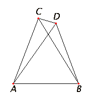

Proposizione I.7
Proposition I.7 Given two straight lines constructed from the ends of a straight line and meeting in a point, there cannot be constructed from the ends of the same straight line, and on the same side of it, two other straight lines meeting in another point and equal to the former two respectively, namely each equal to that from the same end.
Proposition I.7 If the base angles of a triangle are congruent, the sides opposite the base angles are also congruent.
Proof Since AC equals AD, therefore the angle ACD equals the angle ADC, Proposition V. By CN5, ACD > DCB since DCB is part of ACD. By the property of magnitudes (not listed in CN):
If x < y and y = z, then x < z
DCB < ACD and ACD = ADC then DCB < ADC
follows that ADC is greater than the angle DCB.
Next, transitivity of “less than”
If x < y and y < z, then x < z.
follows that the angle BDC is greater than ADC (CN5), and therefore BDC is greater than BCD.
Since CB equals DB, therefore the angle CDB also equals the angle DCB. But it was also proved greater than it, which is impossible: therefore the triangles constructed upon the same right line cannot have their conterminous sides equal, when the vertex of each of the triangles is without the other. □